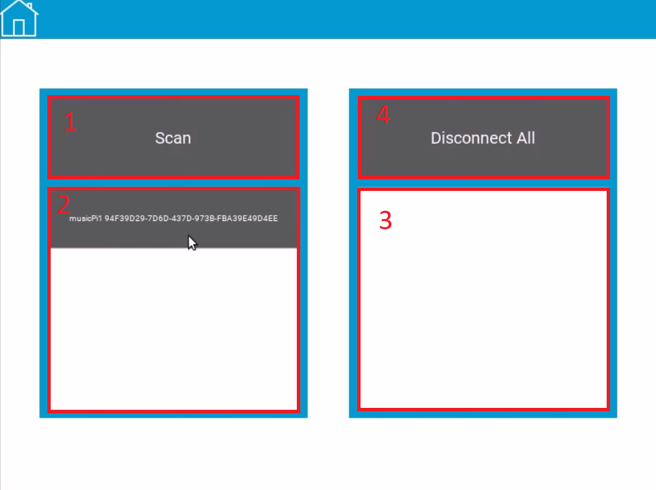

The Soundclout app is an application intended to control and distribute a series of instructions to raspberry pi devices for use in a sound art installation. Even though the intended use of the app is for an art installation, it can still serve as a generalized raspberry pi controller.
The raspberry pis need to be configured with specific code we have developed in order to properly recieve and execute instructions from the soundclout app. A guide for setting up the RPi devices can be found here.
Home Screen:

To get started you must connect to the raspberry pis you intend on using. Go to the "Connect Devices" Page.
Connected Devices page:
First make sure your computer's bluetooth is ON. Hit scan(1) and the app will search the list of bluetooth enabled devices in the area for the configured raspberry pis. The list of devices that show up in the list under scan(2) will only be the pis that are configured for the app- so any other devices in the area won't be available to make a connection. Click on the device name in the list to add it to your list of connected devices(3). If you wish to disconnect from a device simply click on the name in the connected devices area(3). If you want to disconnect from all devices, hit the button(4). Click the home icon in the top left corner to return to the main screen.
To test the raspberry pis you are connected to, navigate to the "Device Tester" screen.
Device Tester Screen:

There will be a list of the devices you are connected to(1) and then you can toggle the switches(2) next to the name to "ON" and hit the test button(3) to start running the components connected to the Pi(s).
Once you are satisfied everything is working as intended you can start grouping together your devices
Go to the "Edit Device Groups page" to begin adding devices.
Edit Device Groups Page:
Select Create Group(1) to create a new group. Groups are collections of devices that all receive the same instructions from the application. Alternatively you can Load Groups(2) to load a configuration you have previously saved.
New Group Screen:
Where it says "New Group"(1) you can name the group whatever you'd like and then hit ok(2) when you're satisfied.
You'll see this after you hit ok:

Now you can see your group settings and the devices that you're connected to(1) in this page. Hit the switch(2) to choose which devices are active inside of this group. Hit back(3) to go back to the edit device groups screen - or hit remove(4) to delete this group.
Now the Edit Device Groups page looks like this:
You can now see the groups you have made in the edit device groups screen. You can click save(1) to save your current group configurations if you want to.
Now we can return to the main screen.
Navigate to the "Edit Group Behavior" screen to start building a timeline. A timeline is a group of time slots that tell each device group how to behave during that slot of time. When the app is running the time slots are executed in order.
Edit Group Behavior Screen:

Hit build timeline(1) to create a new one or load timeline(2) to load a timeline configuration you've already made